| Match Report - 16 July 2011 |
|
|
|
|
|
|
|
|
U6 Green
7 - 1
|
|
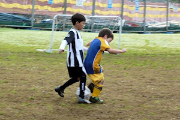
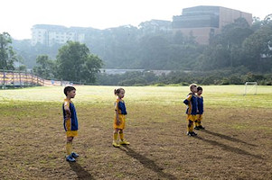
This was an interesting week for the U6 Green team, there were no reserves and
"The wall" of the team kept their undefeated status through skill and
determination. The game started with our team appearing to be distracted by...
well... everything... except for the game that they were playing!
It was the Ravens B team who opened the scoring with a well received own goal
then they scored a goal leading to 1-1. The tension mounted and Christian and
Will scored a goal before half time.
The oranges must have given the team the push along that they needed and following
the Break Will Scored and amazing 2 goals withing 30 seconds of each other.
Christian and Blake also scored in the second half. The mud was flying and
everyone came off ready for the napisan bucket.
Special mention to Will Harrison for his incredible skills from start to finish
in attack and defense that lead the team to victory. Well done to Will being the
player of the match.
- Sarah Robson
|
|
|
|
U6 Purple A
|
|
Not a great turnout in the final weekend of school holidays. With 2 Macquarie
players, and 3 of our team appearing by match start time. Later Macquarie were
able to field 3 players and a 3 on 3 game could start. They eventually even had
4, so were able to rotate.
Our boys Liam, Cameron and Ethan had to work hard in this game, with no chance
of a break. Some near misses in the first half, and Macquarie had a skilled
little player able to dribble well, keeping our boys on their toes, and he scored
a few goals. Cameron and Liam made some exciting clearances from the goal line,
and Ethan had some good long range shots, none quite on target though.
The boys learned some good lessons today about staying up with the ball, and
kicking into space. Player of the match was Cameron.
Special thanks to Rich (Cameron's Dad) for filling in as coach.
- Richard Wolken
|
|
|
|
U6 Red A
2 - 2
|
|
This week the team was playing away against Gladesville Ravens on a field where
there was more mud to be seen than grass but this was not going to deter the boys
determination and enthusiasm. After a week off to recharge their batteries it was
clear from the start that the boys meant business with Ben kicking off proceedings
with a goal in the fifth minute. The Ravens quickly retaliated with a goal of
their own only a few minutes later. Only a couple of minutes after that, Ben had
another shot at goals and secured our second goal of the game taking us into the
half time break 2-1 up.
Going into the second half, the boys did their best to maintain their lead,
however the Ravens made a clear break to score in the fifth minute. After a number
of opportunities at goal by both sides for the remainder of the game, the game
ended with a 2-2 draw.
After some great defensive game play by the boys, with one player down as well,
overall it was a very tight game against an evenly matched opposition. The team
should be really proud of themselves this week given that previously the Ravens
won 4-2 which goes to show how much the team has improved since the last encounter.
In light of this, player of the match went to the entire team this week.
- Tony Dimovski
|
|
|
|
U6 White C
3 - 0
|
|
What a fantastic game! Gladesville were short at the start so we shared a player
so that we could kick off.
North Ryde displayed great sportsmanship and team work. The final score was 3-0
with North Ryde winning.
- Lisa Mach
|
|
|
|
U7 White C
9 - 2
|
|
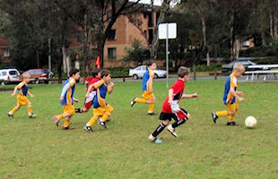
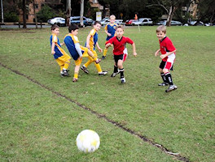
The boys all played a fantastic game. It was a challenging game, which the boys
really enjoyed.
After being undefeated this season it was great to see the boys handle their first
defeat with good sportsmanship. Well done boys!
The score was 9-2 and our player of the match was Jon Jon. (Brave Jon Jon copped
a few hits with the ball during the game).
- Tanya
|
|
|
|
U8 Brown
5 - 1
|
|
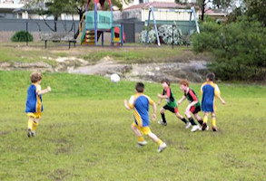
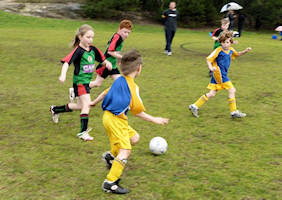
The school holidays have been fun for all, although we were concerned when we were
not sure if we had enough players to start the game on Saturday. Needless to say
the U8 Brown team took this in there stride and were excited to take the field.
Special mention goes to Christian Robson from the U6 green team who stepped up and
played his second game of the day with no reserves and matched the U8 level for
skill and endurance throughout the game.
The game opened with 2 well matched teams and it was Luca who made an impressive
run down the field and took a shot from well outside the circle to score a
brilliant hard hitting goal under the cross bar, as you can imagine the crowd
were elated. The Glenhaven team returned the favour with an equalizing goal.
Tension mounted and Luca decided it was time to show everyone that he could
follow-up with another amazing shot from well out of the circle putting the team
back in the lead. The U8 brown team was so focused at half time, that they didn't
eat their oranges and barely had a drink as they wanted to get back on the field
and keep playing. Something happened on that field on Saturday as every player
stepped it up and played to the best of their abilities with positional play, ball
skills, passing, defending and determination and no one had a break. Brooklyn
scored another 2 goals and Ben scored a goal with the final score 5-1.
Well done to all, what a great result. Player of the week this week went to Ben
for his strength and determination on the field and excellent throw-ins.
- Sarah Robson
|
|
|
|
U8 Yellow
5 - 1
|
|
Round fifteen, game no 13. Game this week was played at Ron Payne Oval Epping
against Beecroft. Half time score-line favoured North Ryde 2 against 1, with
North Ryde extending the full time score by another three goals.
Full time result, Beecroft one (1), North Ryde five (5). Goal keepers this
week were Jacob White and Chris Watt.
Goal Scorers:
1. Fletcher Gusse (2), at the 14 minute mark and again 3 minutes out from half time.
2. Damien Granet (1), ten minutes into second half;
3. Harry Grimes (1), 8 minutes out from full time;
4. Jacob White (1), 2 and one half minutes from full time.
Player of the Match - Chris Watt
- David Watt
|
|
|
|
U9 Division 3
2 - 1
|
|
Round 3 (rescheduled wet game) against Glenhaven was on last week. Unfortunately
I could not attend the game so this report is second hand. The boys played a
tight first half which kept the scores at nil all.
Into the second half Glenhaven scored a lucky goal that slipped through our
keeper's hands. Luke pushed up from defence and managed to get an equaliser,
with Darcy clinching a winning goal towards the end to give the boys a 2-1 win.
Really sorry I missed it.
- Darren Mason (Manager)
|
|
|
|
U11 Division 1
3 - 3
|
|
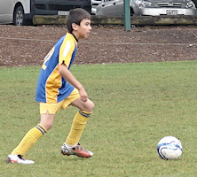
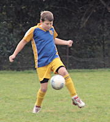
North Ryde's tussle with Kenthurst this morning was a good contest, close and
tight, and you would have been hard-pressed to make a wager on the eventual
outcome of the game with any degree of confidence prior to the final whistle.
The game started off well, and our one-touch passing and positional awareness
between the defence, midfield and forwards improves with each passing week.
A clean and swift movement down the left wing just five minutes into the game
gave Lachlan the time and space to wind up a scorcher with his left boot over
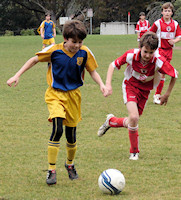
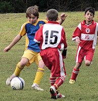
several heads, including the goal-keeper's, into the top-right corner of the
nets. It was an excellent start to the match and served to reduce the initial
pressure and help settle the nerves, but we could not have foreseen the speed
and voracity with which the Kenthurst team came back at us.
They struck three times and in quick succession. The first came from a ball that
rebounded unfortunately off Tim's initial save, and only required a knee-in to
finish it off. The second was an unstoppable direct penalty that was well struck
into the low right-hand corner, and the third came after a zippy run by the
Kenthurst left midfielder whose low and timely cross was easily converted. We were
three goals to one down by the middle of the first half and it didn't seem like we
could do much to stem the rort. But North Ryde came back, to their immense credit,
shaking off the demoralising splurge of Kenthurst goals and sticking to their game
plan. The defence held firm and the midfield re-captured their possession of the
ball, setting up numerous opportunities for the strikers, two of which were ably
converted by Eli to draw level at three goals apiece at the break.
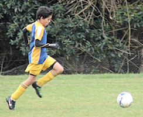
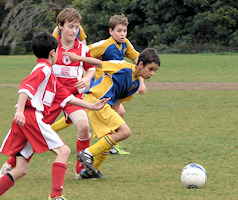
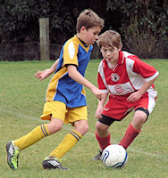
The game see-sawed throughout the second half but neither side were able to
add any further points to the scoreboard. We appeared to have the lion's share
of possession and opportunities in the second half, as is often the case, and
without taking any credit away from the Kenthurst team who were playing their
socks off as well, it is fair to say that we received no favours from the referee
who was widely regarded as their '12th player' in post-match analysis and
discussions. No more so than in the final minute of play, when Oscar P broke
through the Kenthurst defence to intercept a through-ball, with just the keeper
to beat, only to be ruled off-side by what surely would have been the match
winner. Them's the breaks, no third umpires here. Even the Kenthurst coach
conceded that our attacker had not been offside, but was clearly relieved, as
we were, to settle for a draw between two good and evenly-matched sides.
Well done North Ryde, an excellent come-back and recovery when the chips were
down.
- Mark Howard
|
|
|
|
U11 Division 3
2 - 0
|
|
It was good to come away with a win from a hard fought game. As has often been
the case, North Ryde took a while to start working as a team. However, we kept
Kenthurst out, unlike our last meeting.
Robert was again good in defence. Hamish had a shot that went wide and then Luke
poked in his first goal of the season from a pass across the goal mouth. It was
a good reward for Luke’s efforts forward and in mid-field.
In the second half North Ryde played well. Zac and Massie peppered the goal, but
were just off target. Matt and Thomas worked hard in defence. Finally, Benyad was
in the right place at the right time and put away his first goal for the year.
A great finish to a good team performance.
- Martin Borri
|
|
|
|
U11 Division 5
1 - 1
|
|
The grey drizzle did not deter North Ryde, nor did the prospect of facing the top
of the division Redbacks who had previously beaten us 4-0. Captained by last week's
player's player of the match, Tom, North Ryde boasted an almost full complement of
players with the luxury of 2 reserves.
North Ryde got into the game fairly quickly and proceeded to dominate the play.
They were rewarded after around 15 minutes when after a series of accurate passes,
the ball found its way to Guillaume who deservedly scored the opening goal. The
Redbacks turned on the pressure and enjoyed a series of attacks arising from
intercepted goal kicks. North Ryde did well to hold on and prior to half time
again enjoyed some dominance.
The second half began with an onslaught from the Redbacks which saw them score an
equaliser after around 6 minutes. After their goal the Redbacks seemed to come
alive and North Ryde spent most of the remaining match solidly defending. One
minute from the end goalie Tom made an excellent save at the feet of an oncoming
striker thereby thwarting the Redbacks effort to clinch victory at the end.
All in all this was a tremendous result for North Ryde, holding the division
leaders to a 1-1 draw. Special mention must go to Harrison who made his return
to the field after a 7 week absence due to a broken arm. In spite of suffering
from an injured right foot, Harrison insisted he play today and as such did a
great job in defence forced to use his left foot.
Harrison's performance earned him a well deserved manager's player of the match
award.
Great performance North Ryde. As coach Terry said: "Play like today for the last
two matches and you'll surely win." Keep it up!!!
- Michael Emamooden
|
|
|
|
U15 Division 2
4 - 2
|
|
For the twelfth game of the year, with a clear day and an 11:00am start, the boys
played at North Ryde Oval against Glenhaven SC, who is currently 7th in the GHFA
competition but they were pumped up after there victory against Redfield Lions,
who were leading the competition, the week before. We had a squad of 13 players
with Kevin and Hayden away.
As I was running the line therefore I have a short report today:
- Lewis was In Goals
- We started strongly and soon Daniel placed a goal 1-0
- We were dominating the game but at one point just could not mark Glenhaven LHS striker close enough as he made a pass right on the line, next to the goal, who completed his pass to another striker who headed it in, there was nothing Lewis could do. 1-1
- Glenhaven were pumped, their parents were excited as well.
Half Time, to this point of the game it look even, NRS had more attacks and
possession but the score was 1-1. Paul advises the boys to try to be lift their
game and intensity. Then:
- Nat was in goals
- The boys lifted the intensity
- Daniel scored again with a header 2-1
- I yelled to Tom pass to Cameron, who was clear, and he did. Cameron did his cork screw kick. 3-1
- Ben, off a corner, nails the ball with a header. 4-1
- In the dying minute the Glenhaven striker unmarked and just inside the half way mark made a high lob just out of reach for Nat and scored. 4-2
The whole team put in a great effort:
- Chris with his strong runs and often standing still clearing kicks
- Alex with his clearing and strong headers.
- Luke who’s throw ins are amazing, the work at the gym is paying off.
- Mitchell showing his skill with the ball.
- Kyle aggressive runs and passes up the RHS.
- Tom still showing a clean pair of heals up the LHS
- Manav, many attempts at goal shots. I am sure he will get one.
- Harry, looking more confident
Rata presented Daniel with the player of the match and cup cake, well done Daniel.
I would like to thank all the parents who came to support our team... you do make
a difference!
- Joe Rosenfels
|